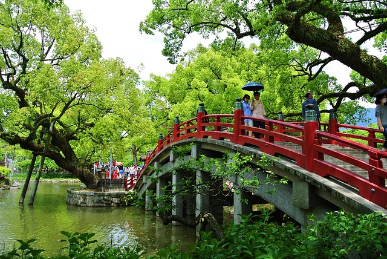

Fukuoka
Die Dazaifu-Brücke befindet sich im Schrein Dazaifu Tenmangu,
der in der Stadt Dazaifu in der Präfektur Fukuoka liegt.
Typische Pflanzen Japans sind Kirschblüten (Sakura), Japanischer
Ahorn (Momiji), Bonsai und Bambus, die für ihre ästhetische
Bedeutung und Symbolik geschätzt werden. Auch Ziergräser, Azaleen,
Chrysanthemen und Glyzinien sind häufig in japanischen Gärten zu
finden.